Gas er et godt politisk våben. Det er bare
ikke Putin, der bruger det
ikke Putin, der bruger det
Nogle EU-lande frygter, at Rusland kan bruge Nord Stream 2 som politisk våben mod
Nogle EO-lande fryster, at kusiand kan bruge Nord Streal 2 som ponusk vaven mod
Europa. Men i virkeligheden er det omvendt, mener firmaerne bag rørledningen: Det e
EU, der bruger gassen som våben over for Putin. Information har været på charmetur
med den russiske gas' europæiske venner
Rusland vil ikke bruge gasrørledninger
rd Stream 2, som politisk våben, lyde
., det fra folkene bag projektet.
Rørledningen koster 70 mia. kr. og vil
om aret. Peter Nygaard Christensen
»Jeg tænker, at vi lige taler os varme sammen,
før vi begynder på interviewet,« siger Jens
Muller, talsperson for det russiske gasfirma
Ned t ddrussiske gasfirm
Nord Stream 2 AG. Vi sidder en gruppe
journalister i en bus på vej til en gasterminal i
Rotterdam, inviteret af folkene bag den
kommende russiske gasrørledning, Nord Stream 2 (NS2), der efter planen skal krydse
dansk farvand.
Vores abonnenter kalder os kritisk, serløs og troværdig.
Se om du er enig ...
Alternativ forbrødring, eller
Alternativ forbrodris, erer
»Jeg måtte ud på det dyb
hvordan jeg lærte at holde
op med at bekymre mig o
elske jazzhænder
•Jeg matte ud på det dybe
and for at nå til et nyt
Iceage lever stadig op til den
hype, de opnåede. inden de
var gamie nok til at nytte
hiemmerra
Under normale forhold ville
rumps skandaleramte
illxhef rorlængst være
levet bortvist.„
Seneste nyt
Information.dk
Forsiden Iige nu
ABONNEMENT
Gas er et godt politisk våben.
Det er bare ikke Putin, der
bruger det
Mand dig op, kvinde!
Peter Madsen anker kun
længden af sin straf
Ankesagen mod Peter Madsen
kommer kun til at handle om, hvilken
strafhan skal have
ABONNEMENT
Rapport fra norsk
regeringskommission skaber
tvivl om lovligheden af FE'S
masseovervågning
ABONNEMENT
Sådan håndteres offentlige
arbejdskonflikter i Sverige og
Norge
Den ellers hojtbesungne danske
model skal revideres, hvis det star til
Socialdemokratiets fotmand. Mette
Frederiksen. Information skitserer i
den anledning
overenskomstmodellerne hos Vores
nordiske sosternationer. Men maske
behover vi Slet ikke se ud over landers
grænser for at finde inspiration til
iusteringer/p>
ABONNEMENT
440.000 syrere er vendt
tilbage, selv om krigen
fortsætter. Vi har fulgt en af
dem
Anbefallnger
Kommentarer

Henrik holm hansen
07. maj. 2018-05:56
Hvis det forholder sig som skrevet står at Rusland for mest ud nord stream 2 forstår jeg
Slet ikke politikerne og måske specielt EU ikke bruger muligheden aktivt til presse
endsige fortælle PUTIN at ruslands opførsel i Ukraine ikke kan accepteres kommer der
ikke penge i kassen kan oligarkeme ikke fodres !
Gert Romme
07. maj. 2018 - 17:08
Jeg Skal ikke vurdere, hvem der eventuelt kan finde på at benytte dette Våben, der er
lammende for civilsamfundet.
Men Rusland har faktisk brugt dette "våben" mere end en gang. Og de vestlige lande med
Forbundsrepublikken i spidsen er blevet ramt mindst 2 gange.
Og hver gang har Rusland beklaget, og undskyldt sig med, at man ikke kunne ramme
Poland (1 gang) og Ukraina (mindst 1 gang), uden at det påvirkede andre aftagelande. Og
mindst en gang mente Rusland, at de vestlige aftagerlande burde straffe??? - Ukraina.
I øvrigt så jeg i eftermiddags tidligere SPD-medlem, tidligere Forbundskanzler og tidligere
Gerhard Schröder sidde på de fine pladser under Vladimir Putins indsættelses-show. Det
var på RT (Russia Today), der er Vladimir Putins personlige propaganda-kanal der også
sikrer "det frie ord" i verden. Det så ud til, det var meget vigtigt for Putin og RT, for der
var
hele tiden fokus på en tidligere Hr. Schröder.
 Peter Nygaard Christensen
Peter Nygaard Christensen

 7. maj 2018
7. maj 2018 Kommentarer (2)
Kommentarer (2) Forsiden Iige nu
Forsiden Iige nu